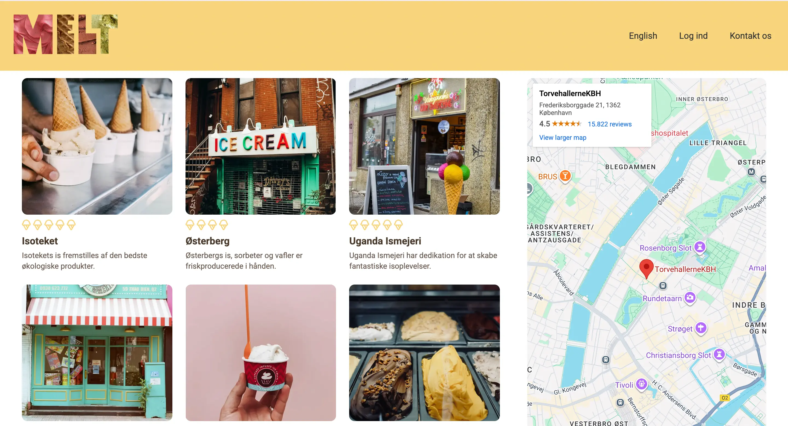

MIN PROCESS
I dette projekt skulle jeg lave en simpel mobilvenlig hjemmeside ved brug af HTML og CSS. Jeg startede med at skitsere et wireframe for at få et overblik over, hvordan siden skulle struktureres. Herefter begyndte jeg at kode
HTML-strukturen og tilføjede derefter CSS for at style siden og gøre den responsiv. Jeg testede løbende på forskellige enheder for at sikre, at designet fungerede godt på både mobil og desktop.

I Grundlæggende UX har jeg lært at arbejde indsigtbaseret med design af brugergrænseflader. Jeg har arbejdet med research, brugerforståelse, user stories og UX/UI-konventioner for at sikre, at designvalg bygger på reelle brugerbehov. Jeg
har lært at planlægge og dokumentere en designproces gennem wireframes, prototyper og test, samt at anvende brugertestmetoder som tænke-højt-test, 5-second test og Lighthouse til at evaluere og forbedre brugeroplevelsen.